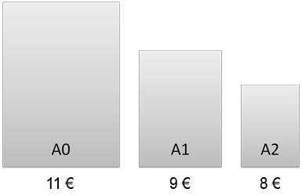

Herzlich Willkommen
Der Fachbereich Informatik bietet nun die Möglichkeit großformatige
farbige Ausdrucke einfach, günstig und schnell anzufertigen.

Um den Plotter zu nutzen müssen Sie sich mit Ihrer TU-ID einloggen.
Wenn Sie einen Druckauftrag abschicken, werden die entstehenden Kosten
an Ihre zugehörige Kostenstelle weitergeleitet. Damit versuchen wir
Ihren Verwaltungsaufwand zu minimieren.